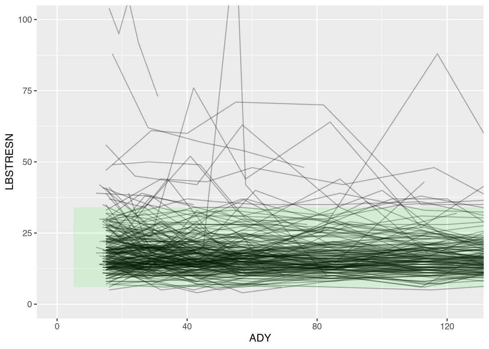
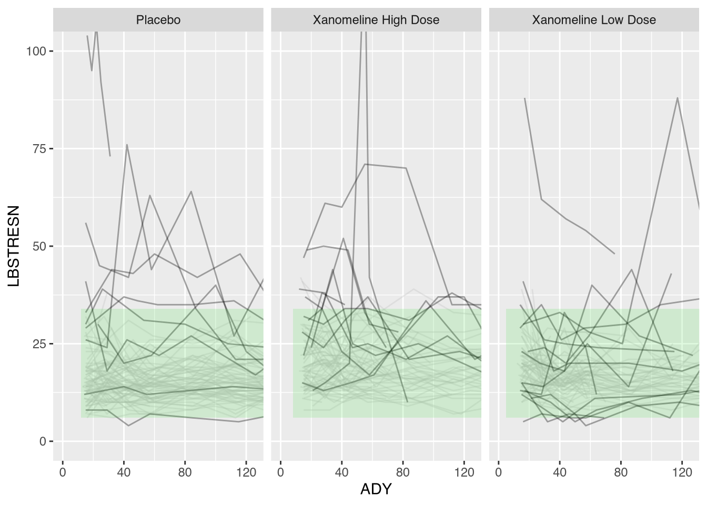
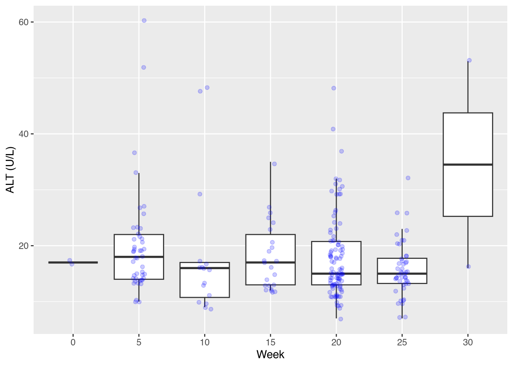
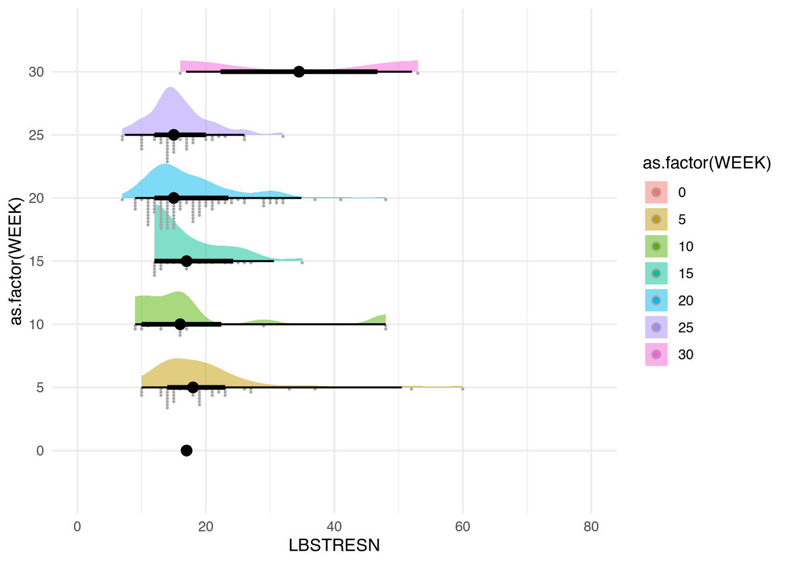
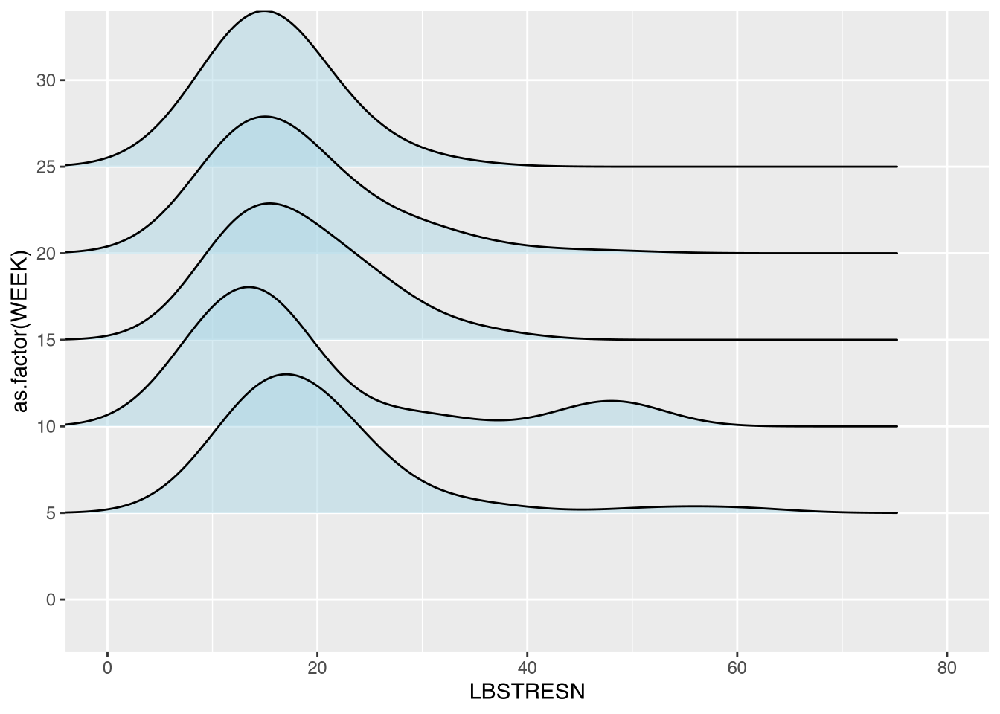
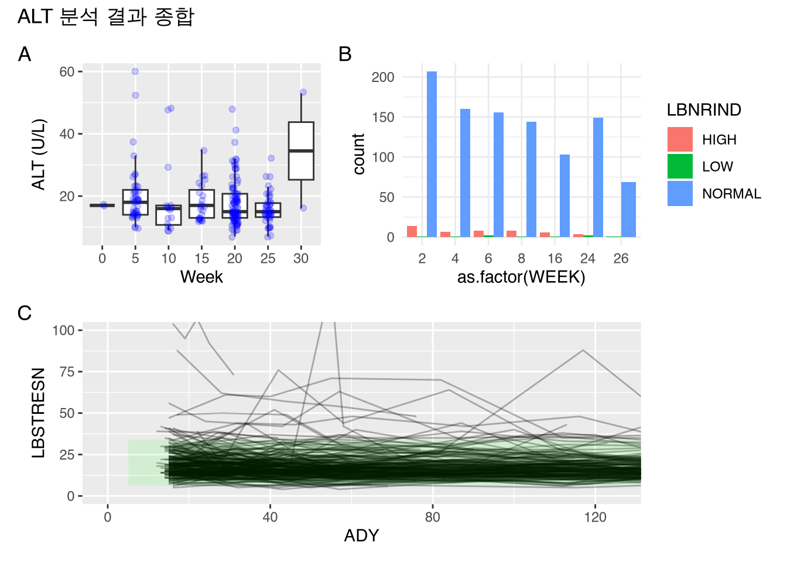
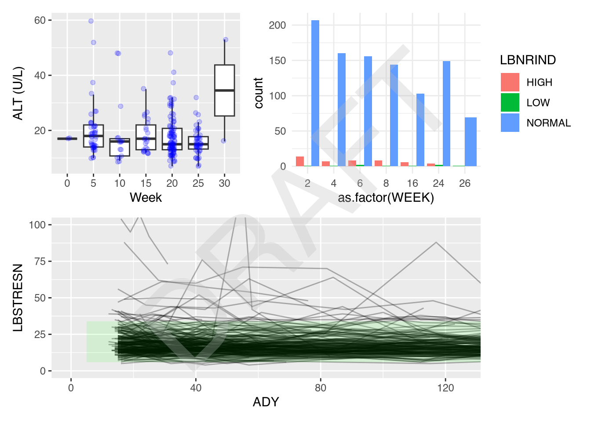

ALT <- import("./data/adlbc.xpt") %>%
filter(PARAMCD == "ALT")
ALT2 <- ALT %>%
filter(VISITNUM > 3) %>%
mutate(WEEK = floor(ADY/7))
# 분석 편의를 위해 치료군을 팩터(Factor)로 변환
TREATfac <- ALT2 %>%
select(TRTA, TRTAN) %>%
distinct() %>%
arrange(TRTAN)
ALT2 <- ALT2 %>%
mutate(TREATTXT = factor(TRTA, levels = TREATfac$TRTA))
# 단일 값을 추출하기 위한 도우미 함수
uniqueVal <- function(x){
res <- unique(x)
if(length(res) > 1) warning("열에 두 개 이상의 값이 있습니다.")
return(res)
}6 {ggplot2} 확장 패키지 활용
이 연습에서는 {ggplot2}의 기능을 보강해주는 5가지 확장 패키지를 소개합니다: {gghighlight}, {ggdist}, {ggridges}, {patchwork}, {cowplot}
6.1 목표
{gghighlight}를 이용한 특정 데이터 강조{ggdist}및{ggridges}를 이용한 분포 시각화{patchwork}를 이용한 여러 그래프 배치{cowplot}을 이용한 주석 및 워터마크 추가
6.2 데이터 소스
익명화된 CDISC 실험실 검사(ADLBC) 데이터셋: https://github.com/phuse-org/phuse-scripts/tree/master/data/adam/cdisc
6.3 1. 데이터셋 준비
알라닌 아미노전이효소(ALT) 결과에 집중하여 분석용 데이터를 준비합니다. 치료 시작 후 주차를 나타내는 WEEK 변수를 생성합니다.
6.4 2. ALT 변화 추이 스파게티 플롯
피험자별 ALT 수치 변화를 선으로 연결하고, 정상 범위(Normal Range)를 음영(geom_ribbon)으로 표시합니다.
ALTmin <- uniqueVal(ALT2$A1LO)[1]
ALTmax <- uniqueVal(ALT2$A1HI)[1]Warning in uniqueVal(ALT2$A1HI): 열에 두 개 이상의 값이 있습니다.plot1 <- ALT2 %>%
ggplot(mapping = aes(x = ADY, y = LBSTRESN)) +
geom_line(mapping = aes(group = USUBJID), alpha = 0.3) +
geom_ribbon(aes(ymin = ALTmin, ymax = ALTmax), fill = "green", alpha = 0.1) +
coord_cartesian(ylim = c(0, 100), xlim = c(0, 125))
plot1
6.5 3. {gghighlight}로 이상치 강조
정상 범위를 벗어난(“HIGH” 또는 “LOW”) 기록이 한 번이라도 있는 피험자의 라인만 강조해 보겠습니다.
library(gghighlight)Warning: package 'gghighlight' was built under R version 4.4.3plot1c <- plot1 +
gghighlight(any(LBNRIND %in% c("HIGH", "LOW")), calculate_per_facet = TRUE) +
facet_wrap(~ TRTA)label_key: USUBJIDToo many data series, skip labelingplot1c
6.6 4. 분포 시각화 (Boxplot & Jitter)
상자 그림(Boxplot)은 데이터의 분포를 요약해 주지만 데이터의 개수는 보여주지 못합니다. geom_jitter를 겹쳐서 보완해 봅니다.
plot2b <- ALT2 %>%
filter(WEEK %in% c(0, 5, 10, 15, 20, 25, 30)) %>%
ggplot(mapping = aes(x = as.factor(WEEK), y = LBSTRESN)) +
geom_boxplot(outlier.shape = NA) +
geom_jitter(alpha = 0.2, width = 0.1, color = "blue") +
labs(x = "Week", y = "ALT (U/L)")
plot2b
6.7 5. 분포 시각화 (Dotplot & Ridge plot)
{ggdist}를 사용하면 점의 밀도를 직접적으로 보여주는 도트 플롯(Dotplot)을 그릴 수 있습니다.
library(ggdist)Warning: package 'ggdist' was built under R version 4.4.3# Raincloud plot 스타일
ALT2 %>%
filter(WEEK %in% c(0, 5, 10, 15, 20, 25, 30)) %>%
ggplot(mapping = aes(x = LBSTRESN, y = as.factor(WEEK), fill = as.factor(WEEK))) +
stat_slab(alpha = 0.5) +
stat_dotsinterval(side = "bottom", scale = 0.5) +
coord_cartesian(xlim = c(0, 80)) +
theme_minimal()
{ggridges}를 이용한 능선 플롯(Ridge Plot)은 여러 그룹의 분포를 비교할 때 매우 효율적입니다.
library(ggridges)
Attaching package: 'ggridges'The following objects are masked from 'package:ggdist':
scale_point_color_continuous, scale_point_color_discrete,
scale_point_colour_continuous, scale_point_colour_discrete,
scale_point_fill_continuous, scale_point_fill_discrete,
scale_point_size_continuousALT2 %>%
filter(WEEK %in% c(0, 5, 10, 15, 20, 25, 30)) %>%
ggplot(mapping = aes(x = LBSTRESN, y = as.factor(WEEK))) +
geom_density_ridges(alpha = 0.5, fill = "lightblue") +
coord_cartesian(xlim = c(0, 80))Picking joint bandwidth of 5.07
6.8 6. {patchwork}를 이용한 그래프 배치
여러 개의 그래프를 하나로 합쳐 보겠습니다. |는 좌우 배치를, /는 상하 배치를 의미합니다.
library(patchwork)Warning: package 'patchwork' was built under R version 4.4.3# 간단한 막대 그래프 생성
plot3 <- ALT2 %>%
filter(WEEK %in% c(2, 4, 6, 8, 16, 24, 26)) %>%
ggplot(aes(x = as.factor(WEEK), fill = LBNRIND)) +
geom_bar(position = "dodge") +
theme_minimal()
combined_plot <- (plot2b | plot3) / plot1
combined_plot + plot_annotation(title = "ALT 분석 결과 종합", tag_levels = "A")
6.9 7. {cowplot}으로 워터마크 추가
{cowplot}은 그래프 위에 텍스트를 그리거나 워터마크를 넣는 작업을 쉽게 만들어줍니다.
library(cowplot)Warning: package 'cowplot' was built under R version 4.4.3
Attaching package: 'cowplot'The following object is masked from 'package:patchwork':
align_plotsThe following object is masked from 'package:lubridate':
stampggdraw(combined_plot) +
draw_label("DRAFT", color = "grey", alpha = 0.3, size = 100, angle = 45) 
6.10 챌린지
지금까지 배운 내용을 활용하여 시간에 따른 ALT 수치 변화 그래프를 만들어 보세요. 특히 정상 범위를 벗어난 데이터 포인트를 빨간색으로 표시하고, 치료군별로 패싯을 나누어 보세요.